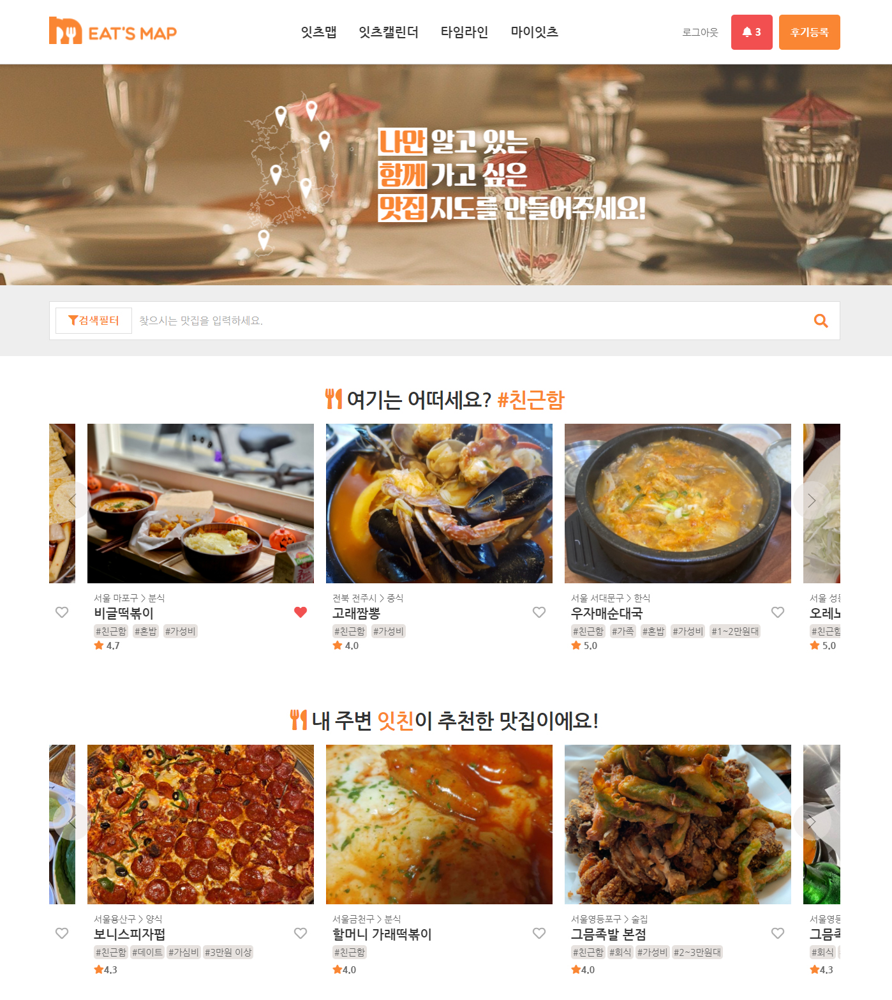
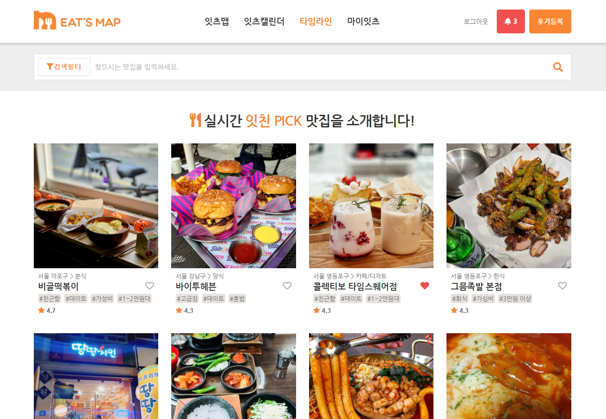
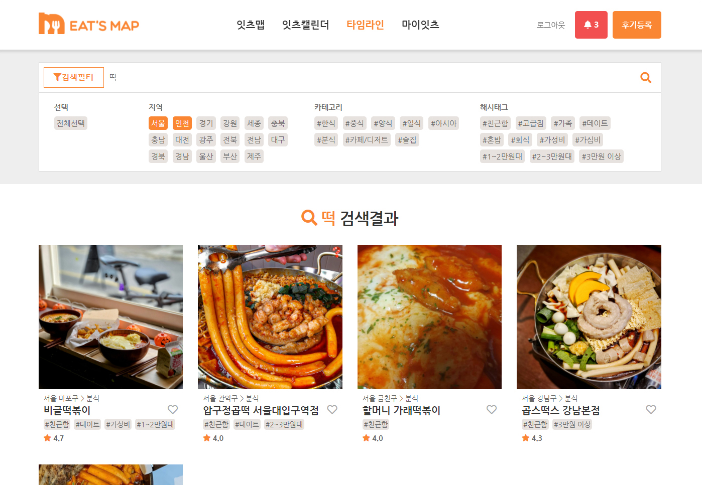
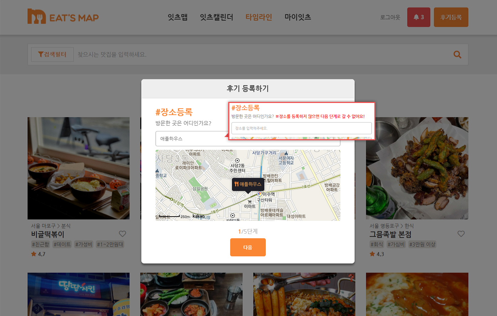
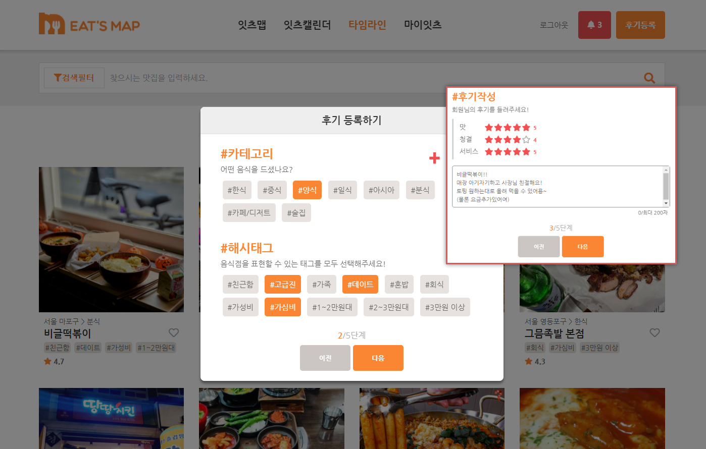
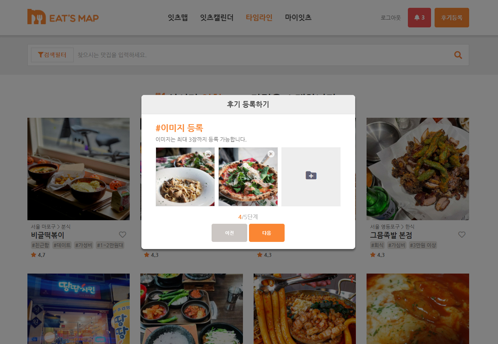
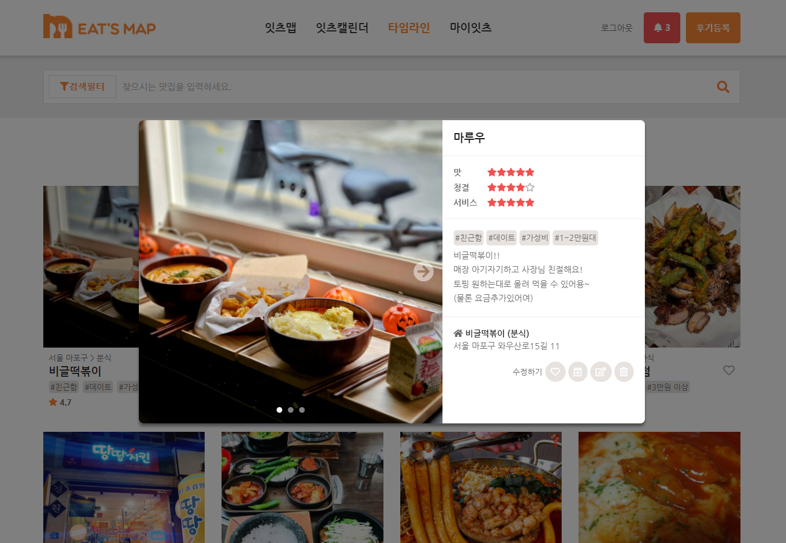
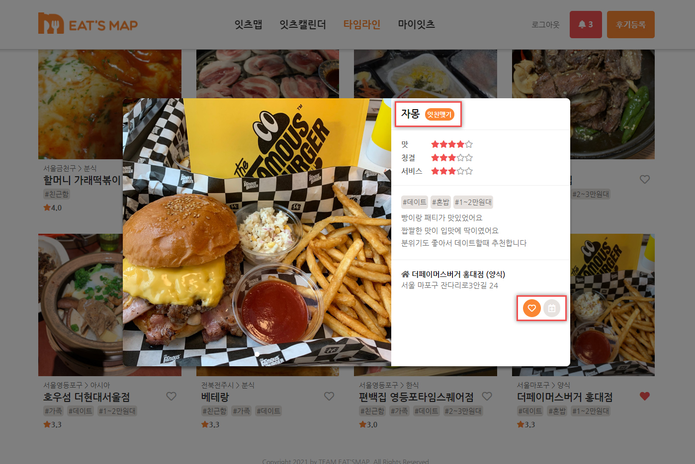
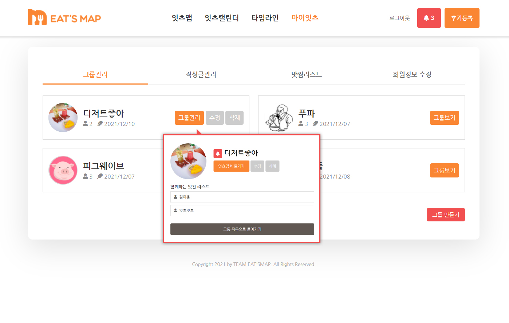
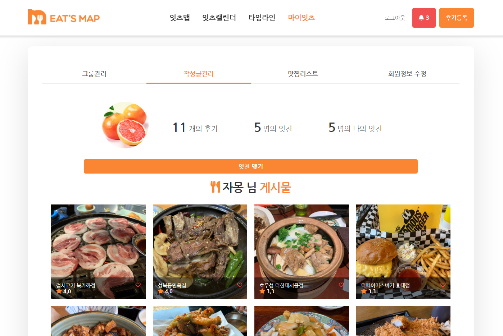

-
- 프로젝트명
- EatsMap(나만의 맛집 지도 잇츠맵)
- 프로젝트 기간
- 2021년 11월 09일 ~ 2021년 12월 07일 (팀프로젝트 - 6인)
- 프로젝트 설명
-
허위 광고가 아닌 진짜 맛집을 찾아내는 서비스!
허위 맛집 광고에 지친 사용자들이 맛집 경험을 직접 기록하고 나만의 맛집 지도(잇츠맵)를 만들어 친구들과 공유하거나
마음에 드는 유저를 팔로우하여 원하는 맛집 지도를 그릴 수 있는 웹사이트입니다.
사용자가 즐겨 사용하는 해시태그를 기반으로 "사용자 맞춤 맛집"을 추천하거나 사용자의 위치 기반의 맛집 리뷰를 추천하는 기능도 제공하고 있습니다.
- 개발환경
-
Skills Java / JSP / JavaScript / HTML / CSS
Database MongoDB
Framework Spring
Library & API KAKAO Maps API / HTML5 geolocation API / FullCalendar API / Javax mail
Others Firebase
-
- MongoDB를 채택한 이유 ?
-
잇츠맵은 기존 SQL 관계형 데이터베이스 대신 NoSQL 기반의 MongoDB를 사용하고 있습니다.
잇츠맵 서비스는 이름에서도 알 수 있듯 기본적으로 위치 정보를 기반으로 리뷰를 등록하고 조회합니다.
우리는 Geolocation 타입의 정보를 Mapping 해주는 MongoDB를 사용하여 개발의 효율을 높이고자 했습니다.
MongoDB를 사용할 때는 주로 Spring Data의 MongoDB 메서드를 사용하여 쿼리를 생성하거나
CRUDRepository를 상속받는 Repository를 활용하여 Pageable 및 Sort 객체로 데이터를 조회했습니다.
상황에 따라서는 복잡한 쿼리 수행을 위해 MongoTemplate을 활용하였습니다.
-
-

[1/11]
사용자가 가장 많이 사용한 해시태그를 분석하여 해당 해시태그가 포함된 "사용자 맞춤 맛집"을 추천합니다.
또한 HTML Geolocation API를 사용하여 사용자의 위치를 기준으로 반경 10KM 내의 맛집 리뷰를 추천하고 있습니다.
-

[2/11]
타임라인은 ajax를 사용한 무한 스크롤을 구현하고 있으며 공개 허용된 모든 리뷰가 노출되는 곳입니다.
-

[3/11]
필터 검색과 키워드 검색을 통해 리뷰를 조회할 수 있습니다.
필터 검색은 선택한 지역 내에서 선택한 카테고리, 해시태그를 포함한 리뷰 조회를 위해 MongoTemplate 쿼리를 활용하였습니다.
-

[4/11]
리뷰는 모든 페이지에서 페이지 전환 없이 노출되야 하므로 버튼이 header 영역에 위치하고 있고 비동기 팝업으로 보여주고 있습니다.
리뷰 등록시에는 단계별로 입력 상태를 검증하여 모든 폼을 작성해야만 다음 단계로 넘어갈 수 있고,
지도는 KAKAO Maps API를 사용하여 키워드로 장소를 검색하고 장소를 선택하면 지도에 노출되도록 처리하였습니다.
-

[5/11]
8개의 카테고리와 11개의 해시태그로 분류하고 맛, 청결, 서비스 별 별점을 등록하도록 함으로써 리뷰의 정확도를 높였으며
사용자가 등록한 리뷰 정보를 통해 사용자가 선호하는 맛집을 분석할 수 있는 기반을 마련하였습니다.
-

[6/11]
파일은 jpg/png/gif 이미지 파일만 업로드 가능하며, 파일 업로드시 사진을 손쉽게 교체, 삭제하는 등
사용자 편의를 위해 Javascript에서 FileReader 객체를 사용하여 사진 미리보기를 제공하고 있습니다.
-

[7/11]
리뷰 클릭시 노출되는 상세 팝업입니다. 상세 이미지는 슬라이드 이미지로 구현하였습니다.
작성자는 해당 리뷰를 수정/삭제할 수 있고 삭제시 다른 회원의 찜 목록에서도 해당 리뷰가 삭제됩니다.
-

[8/11]
상세 팝업 내에서 다른 유저 피드로 이동, 잇친 추가(팔로우), 리뷰 찜, 캘린더에 일정을 등록할 수 있습니다.
-
[9/11]
잇츠맵은 KaKao Map API와 HTML5 Geolocation API를 사용하여 사용자 위치 기준 5km 이내의 공개된 맛집 리뷰를 맵 상에서 보여주며, 내 지도, 소셜 지도, 그룹 지도를 제공합니다.
-

[10/11]
마이잇츠 페이지에서 그룹을 생성할 수 있으며, 유저를 초대하면 그룹 지도를 공유할 수 있습니다.
초대된 유저는 언제든지 그룹을 나갈 수 있고, 그룹장은 그룹 수정, 삭제, 유저를 추방할 수 있습니다.
-

[11/11]
유저를 팔로우함으로써 해당 유저가 팔로우공개로 작성한 리뷰를 확인할 수 있으며, 언제든지 팔로우를 해제할 수 있습니다.
 [9/11] 잇츠맵은 KaKao Map API와 HTML5 Geolocation API를 사용하여 사용자 위치 기준 5km 이내의 공개된 맛집 리뷰를 맵 상에서 보여주며, 내 지도, 소셜 지도, 그룹 지도를 제공합니다.
[9/11] 잇츠맵은 KaKao Map API와 HTML5 Geolocation API를 사용하여 사용자 위치 기준 5km 이내의 공개된 맛집 리뷰를 맵 상에서 보여주며, 내 지도, 소셜 지도, 그룹 지도를 제공합니다.